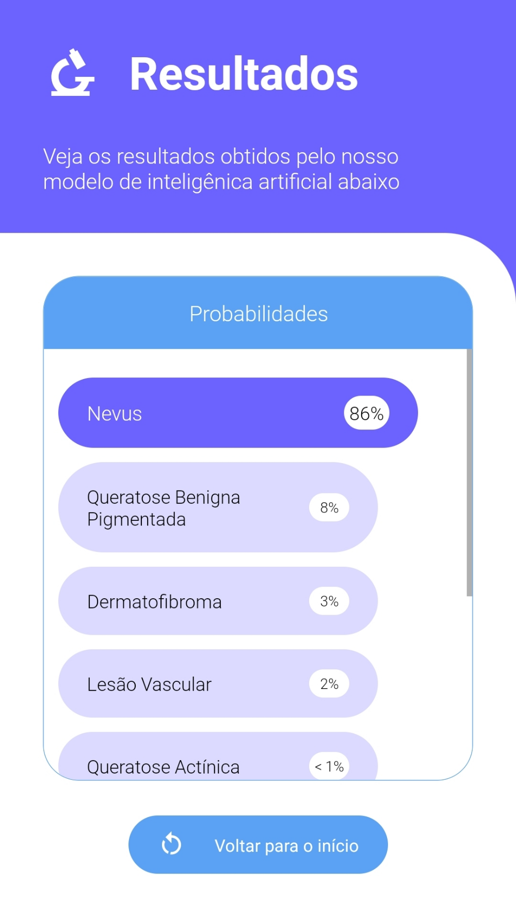

IA na Dermatologia
O CRIAR desenvolveu um aplicativo inovador que usa inteligência artificial para auxiliar na identificação de possíveis lesões malignas de pele. O usuário captura uma imagem da lesão com a câmera do celular e recebe uma análise preliminar, que indica se há sinais que justificam a busca por um dermatologista para avaliação mais detalhada. A tecnologia do app se baseia em modelos avançados de IA treinados com imagens médicas, o que traz uma análise acessível e alinhada às necessidades de quem precisa de um primeiro sinal de alerta.
O objetivo da aplicação é tornar a detecção precoce mais acessível e apoiar a conscientização sobre a saúde da pele, permitindo que qualquer pessoa, em diferentes regiões, obtenha uma avaliação inicial sem sair de casa. O desenvolvimento decorre de parceria com especialistas e instituições médicas, como o Hospital das Clínicas da UFPE, para assegurar precisão e confiabilidade nos resultados.
Maior Dataset Brasileiro de Lesões de Pele
Diante da baixa representação de diferentes tons de pele em muitos datasets acadêmicos e da diversidade étnico-racial do Brasil, o CRIAR estrutura o Maior dataset de imagens clínicas de lesões de pele brasileiro, com foco especial em peles com maior presença de melanina. Em parceria com o Hospital das Clínicas da UFPE, desenvolvemos uma solução clínica que registra imagens de lesões de pele acompanhadas da classificação feita por dermatologistas, o que assegura qualidade e rigor médico nas anotações.
Esse dataset nasce dentro do ambulatório de dermatologia do HC-UFPE, que atende cerca de 1000 pacientes por mês, o que amplia a variabilidade das imagens e aumenta a representatividade da população brasileira em toda a base. O resultado é um conjunto de dados mais diverso, fiel à realidade do país e muito mais adequado para treinar modelos de IA que atendem de forma justa diferentes fototipos de pele. Acesse a publicação sobre o nosso dataset no Arxiv
O CRIAR também disponibiliza um dashboard que oferece visão detalhada e atualizada em tempo real sobre a base de dados. As imagens se organizam por semana de coleta, classe de lesão e outros critérios clínicos relevantes, com gráficos históricos e filtros ajustáveis que permitem acompanhar a evolução da coleta, identificar padrões, comparar categorias e apoiar decisões tanto de pesquisa quanto de gestão. Esse painel transforma a base de imagens em uma ferramenta prática de monitoramento e análise, facilitando o planejamento de estudos, a definição de prioridades e a avaliação contínua da qualidade e da representatividade do dataset.
MAIS DE 3700 IMAGENS COLETADAS!!!
 Acesse o Dashboard
Acesse o DashboardAplicativo de classificação de lesão para pacientes
Nosso aplicativo auxilia na identificação precoce de possíveis lesões malignas de pele e coloca a avaliação inicial diretamente na mão do usuário. Qualquer pessoa usa a câmera do celular para capturar a imagem de uma lesão suspeita, como sinais, manchas ou marcas na pele, e o sistema classifica o nível de risco dessa lesão, oferecendo uma recomendação clara sobre a necessidade de procurar um dermatologista para avaliação profissional.
Com base na severidade identificada, a aplicação organiza as recomendações em níveis: lesões de baixa preocupação sugerem acompanhamento dermatológico de rotina; lesões de risco moderado indicam a importância de uma consulta nos próximos meses; e, nos casos em que surgem indícios de possível lesão maligna, o usuário recebe uma orientação enfática para buscar um dermatologista o mais rápido possível.
O objetivo é facilitar o acesso à saúde preventiva e ampliar a conscientização sobre câncer de pele e outras condições dermatológicas. O app não substitui o diagnóstico médico, mas funciona como uma ferramenta complementar que incentiva o cuidado precoce, organiza a percepção de risco e apoia a decisão sobre quando buscar ajuda especializada.
Aplicativo de apoio ao diagnóstico para atenção primária
O aplicativo de classificação auxilia profissionais de atenção primária na triagem de lesões de pele e oferece suporte baseado em inteligência artificial para facilitar o encaminhamento de pacientes ao dermatologista. Com a ferramenta, o médico captura ou carrega uma imagem de uma lesão suspeita e recebe uma análise com as classes mais prováveis dessa lesão, o que torna a tomada de decisão sobre necessidade e urgência do encaminhamento mais objetiva e embasada.
A aplicação não substitui o diagnóstico médico, mas atua como apoio para médicos generalistas, clínicos e outros profissionais da atenção primária, com estimativas baseadas em modelos de IA treinados com imagens clínicas. O sistema indica, por exemplo, se a lesão apresenta características compatíveis com nevos benignos, ceratoses seborreicas, melanomas ou carcinomas, o que reforça a segurança da avaliação preliminar.
